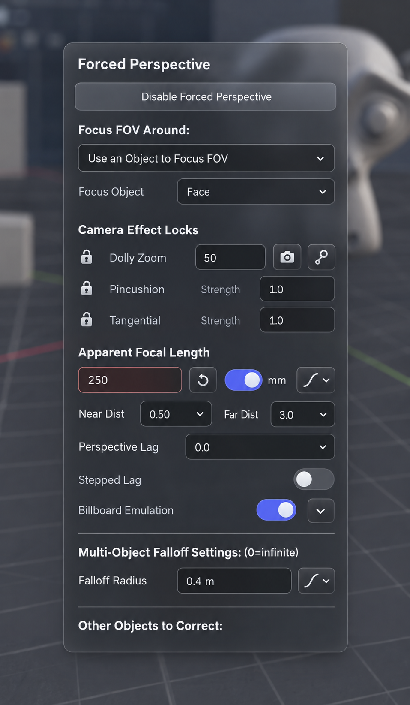
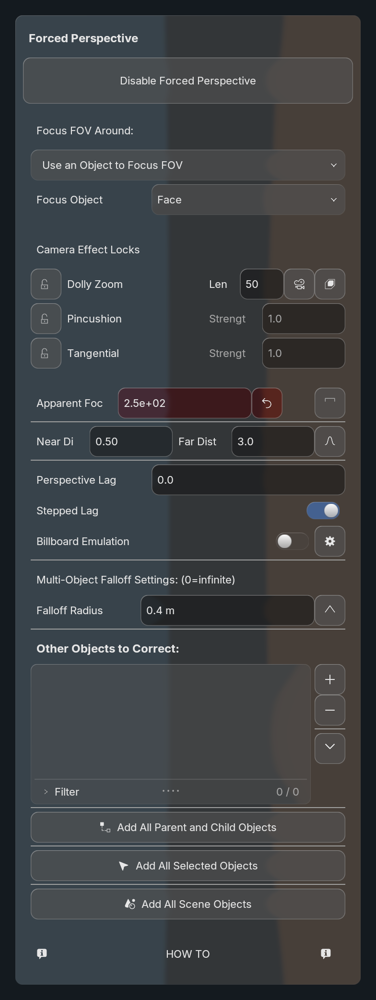
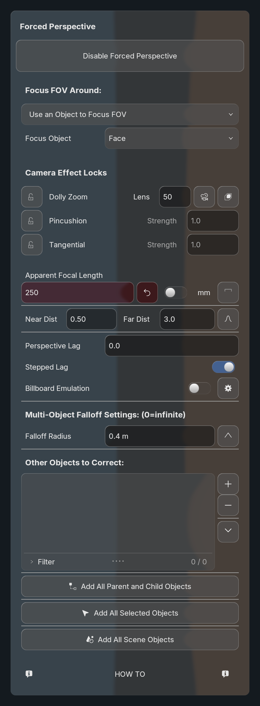
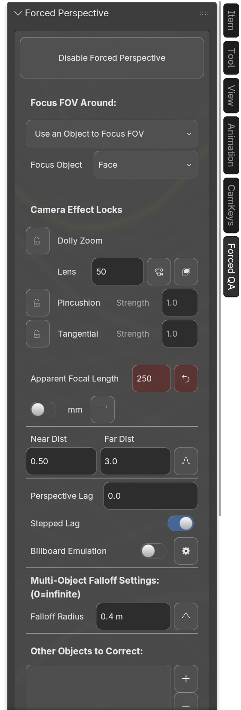
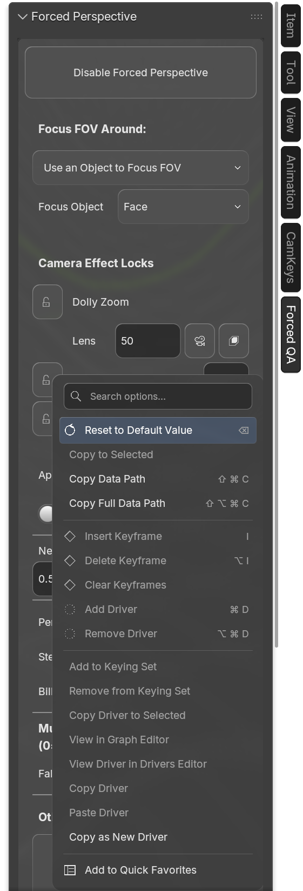
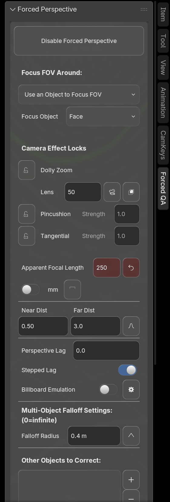

Generated macOS direction

Shared panel changes: structural bold headings, wrapped long titles, aligned field columns, four-unit gutters, value-baseline accessories, intrinsic switch/icon/unit widths, and percentage splits that reflow before hiding controls. No CamKeys label-name overrides or consumer source edits.
Generated references are separated from real Blender evidence. Exact image matching remains open: the generated numeric arrows would invent menu behavior, and its icons, backdrop and rim differ. Those differences are recorded explicitly. The actual controls keep BVT glass, theming, motion and original owner menus.






State slideshow, not a timing or bounce-speed demonstration.

288 unit tests; real CamKeys runtime checks on Blender 5.1.2 and 5.2.2; nine width/scale captures per version. Native capture uses a disposable dedicated category so unrelated panels do not obscure the fixture. No focus activation recorded. Warm CPU timings exclude GPU completion/readback and are not source-performance certification. Evidence and limits · Overview and estimate · Reusable layout policy